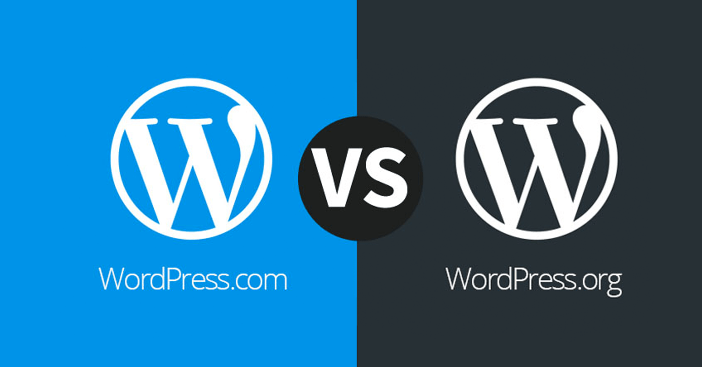

Difference between Wordpress.com and Wordpres.org

WordPress.com and WordPress.org are both widely used systems for creating websites, but there are some significant distinctions between the two that must be recognised. In order to assist you choose which platform is best for your website, we'll go through the key distinctions between WordPress.com and WordPress.org in this blog article.
As a fully hosted platform, WordPress.com handles all the technical facets of maintaining a website, including hosting, security, and software upgrades. Because you don't need any technical skills to get started, it's a terrific choice for novices. Themes, plug-ins, and e-commerce capability are just a few of the numerous features and possibilities offered by WordPress.com. However, there are several restrictions with WordPress.com, including a lack of control over the website's code and constrained revenue choices.
However, because WordPress.org is a self-hosted platform, you are need to locate your own web hosting company and handle all the technical facets of maintaining a website. You now have total control over the code of your website and are free to use any theme or plugin you choose. WordPress.org further offers more revenue-generating opportunities, like affiliate marketing and advertising. However, this calls for additional technical expertise and upkeep.
WordPress.com and WordPress.org's price structures are another significant distinction. In addition to many premium plans with extra features and choices, WordPress.com now provides a free plan. On the other hand, WordPress.org is free to download, but you will have to pay for site hosting, a domain name, and other costs.
In conclusion, creating websites using WordPress.com and WordPress.org is a terrific alternative, but it's crucial to recognise their fundamental distinctions. WordPress.com is an excellent fully hosted platform for novices, whereas WordPress.org is a self-hosted platform that offers you total control over the code of your website. Either of these may be the best option for your website, depending on your requirements and technical expertise.
Source : Internet